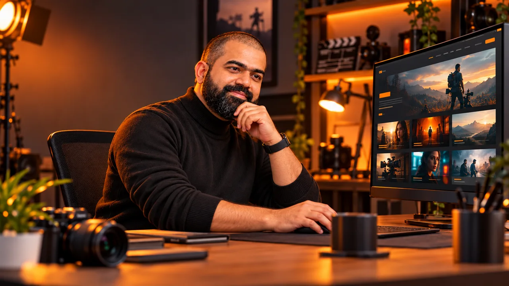

Framer
The instructor described it as a more hands-on design workflow. Plan how project data will fit its collection approach.
Use the supplied master prompt to draft a site, replace placeholders, and review the finished pages.
Sunday 15 November 2026 · 8:00–10:00 PM IST
Alexx Roy, Founder of Build My AI Movie Studio

The instructor described it as a more hands-on design workflow. Plan how project data will fit its collection approach.
A more guided AI workflow in the class comparison. The demonstration reviewed a plan before building.
The instructor described it as a more technical interface. Tailor the implementation instructions to your skills.
These are class-time workflow observations. Features, access, and pricing can change.
Where planning is available, inspect the proposed Home, Projects, and About pages and the requested interactions before generation. The transcript allows detailed prompting and does not prescribe a fixed number of messages.
Use accurate descriptions of your portfolio, intended audience, and services. AI video can sit within broader production or marketing services when that matches your actual work.
Replace project names, thumbnails, and video placeholders with authorized material. Keep a short map from each placeholder to its replacement link.
The instructor suggested YouTube Unlisted or Wistia for video playback and noted Google Drive links may not play inline. Unlisted means link-accessible, not private.
Check the destination and embed format. Try a direct playback link from a video host discussed in class.
Keep one platform-appropriate approach and remove incompatible clauses before generation.
List the affected sections and group the desired changes rather than sending repeated vague requests.
Source: Portfolio website layout. The transcript discusses adapting this prompt but does not provide complete official Framer, Lovable, or v0 variants. Make a separate working copy and tailor it.
Build a premium, multi-page portfolio website for an AI Video Creator with a modern, high-end, minimalist dark aesthetic. The site requires a dynamic content architecture (CMS/Backend capability) so that all text, categories, and project video links can be updated easily. Implement a global, persistent Navigation Bar linking the three main pages: Home, Projects, and About. ### Global Interactive Feature: - Lead Capture Popup: Trigger a sleek modal form exactly 5 seconds after the user lands on the website. Fields required: Name, Phone, Email ID, and Query. It must include a close button and smooth fade-in animation. --- ### PAGE 1: Homepage (Route: `/` or Home) 1. Hero Section: Full-screen or large aspect-ratio video/image container with a clean text overlay for a cinematic title and subtitle. 2. Client Logo Ticker: A seamless, horizontal infinitely auto-scrolling row of client or brand logos. 3. Brief Bio: A two-column layout featuring a professional photo on one side and a brief, elegant "About Me" introduction on the other. 4. Awards & Recognitions: A minimalist section displaying industry benchmarks, awards, or feature highlights. 5. Reviews: A high-end carousel or clean grid showcasing brief client review cards. --- ### PAGE 2: Projects Page (Route: `/projects`) 1. Banner: A premium header banner with bold typography and a text description introducing the portfolio body of work. 2. Layout System: A two-column setup for maximum utility. - Left Sidebar: A clean dropdown menu to filter projects by Category. - Main Grid: A responsive gallery grid displaying multiple project cards. 3. Project Cards & Video Handling: Each card must fetch its data dynamically. The card displays a thumbnail wrapper that, when clicked, opens or plays an embedded YouTube video link (optimized for Unlisted YouTube video embeds). 4. Metadata Toggle: Under each video, include a subtle UI toggle that reveals the technical prompt specifications or JSON metadata for that project. --- ### PAGE 3: About Me Page (Route: `/about`) 1. Detailed Bio: An expanded narrative layout paired with a striking, high-fidelity profile image. 2. Workflows Section: A dedicated, auto-sliding asset grid titled "Workflows" displaying behind-the-scenes proof, node structures, or generation stages. 3. Detailed Testimonials: A deep-dive section for long-form client testimonials and quotes. 4. Benchmarks & Accolades: A final structured grid highlighting key artistic milestones and industry recognition. --- ### Backend & Content Management Requirements: - If building in Framer: Structure this layout to perfectly map to Framer Collections (CMS) for the Projects grid and text blocks. - If building in Lovable / v0: Create a centralized, editable local state configuration file (or connect to a Supabase database schema) and generate a hidden or password-protected "/admin" dashboard view. This dashboard must allow me to: 1. Add, edit, or delete project cards (Fields: Title, Category, YouTube Link, and Specs JSON). 2. Modify the main text fields and descriptions across the Homepage, Projects page, and About page. Styling: Use Tailwind CSS, premium typography, and smooth page transitions via Framer Motion to give it an elite, cinematic production studio feel.
The prompt asks for a lead-capture form and editable project content. Adapt those features to your portfolio and ensure any admin or backend approach is suitable before exposing it.
The playbook takes you through prompt tailoring, planning, adding materials, responsive checks, and recording your next revision.
Use Framer for the hands-on design workflow discussed in class, adapting project collections to the selected builder.
Use Lovable’s guided plan and generation workflow; inspect the proposed structure before implementation.
Use v0 as the more technical workflow discussed in class and remove implementation clauses that do not fit.
Use an Unlisted video link for portfolio playback when appropriate; anyone with the link may view it.
Use Wistia as the alternative portfolio video-hosting service named in class.